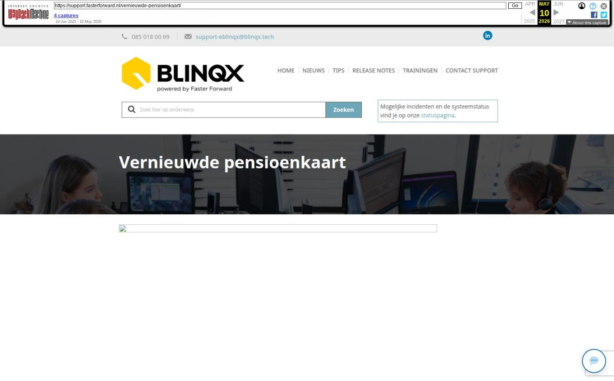

Vernieuwde pensioenkaart

Tekstinhoud
Op woensdag 11 juni zijn Elements en eBlinqx weer verbeterd en uitgebreid met nieuwe features. Deze release bevat een vernieuwde pensioenkaart en verbeteringen onder de motorkap.
Elements en eBlinqx
Vernieuwde pensioenkaart
Verbeteringen onder de motorkap
Overige verbeteringen
Elements en eBlinqx
Vernieuwde pensioenkaart
Vanaf nu wordt er voor nieuw aangemaakte pensioenproducten gebruik gemaakt van de vernieuwde pensioenkaart. In de bestaande producten blijft de oude kaart staan. Wat veranderingen op een rij:
Alleen de types 'Individueel' en 'Collectief' blijven bestaan. 'Semi-collectief' is verwijderd
Het type 'Collectief' bestaat uit de opties 'Werknemer' en 'Werkgever'
Bij 'Collectief – Werkgever' leg je collectieve afspraken vast met daaronder een lijst met deelnemers (werknemers) met hun eigen afspraken binnen het collectieve pensioen
Het pensioenproduct 'Collectief – Werknemer' voer je op in een particulier dossier en hierin voer je de individuele keuzes van het pensioencontract op
Het pensioenproduct 'Individueel' gebruik je wanneer een pensioen individueel wordt geregeld. Deze bevat de types 'Opbouw lijfrente', 'Direct ingaande lijfrente' en 'Direct ingaand pensioen'
In de pensioendelen (rechts in de productkaart) zijn vele velden verwijderd om de kaart overzichtelijker te maken
Productbeheer voor pensioendelen is niet langer meer nodig. Dit zijn vaste opties, waardoor je de productgroepen en producten niet meer zelf hoeft aan te maken
De kaart is met een andere techniek gemaakt, waardoor de velden intuïtiever reageren
Hier vind je meer informatie over de vernieuwde pensioenkaart.
Oude pensioenkaart
Vernieuwde pensioenkaart
Verbeteringen onder de motorkap
De softwaretechnieken van Elements en eBlinqx zijn weer vernieuwd. We hebben hier verdere verbeteringen op doorgevoerd. Ondanks dat je hier niets van merkt, is deze vernieuwing erg belangrijk.
Hierdoor kunnen we namelijk nieuwe innovaties blijven implementeren, omdat we gebruik maken van de nieuwste software. Bovendien blijft de veiligheid gewaarborgd. Dit geldt zowel voor Elements en eBlinqx als voor alle koppelingen en exports, zoals klantportalen, adviespakketten, Excel en verbindingen met geldverstrekkers en verzekeraars.
Overige verbeteringen
Het is nu mogelijk, bij mutatievoorstellen, om een polis op de ingangsdatum te royeren
Na de vorige release was het niet mogelijk om de schadedatum/tijd aan te passen. We hebben hier een aanpassing in gedaan. Als je werkt met mutatievoorstellen dan kan je weer de schadedatum/tijd aanpassen
In de ADN mutatiebatch hebben we het visueel zichtbaar gemaakt wanneer je via het playicoon de post niet kunt boeken
Bij het koppelen van een e-mail aan een dossier worden nu bij het zoeken de zoekresultaten gesorteerd op dossiernummer. Het hoogste nummer komt bovenaan te staan. Voorheen was de sortering op alfabetische volgorde
Geplaatst op 20 mei 2025 (Laatste update: 10 juni 2025)
Laatste 5 releasenotes
Nog meer data en documenten vergelijken »
Gemakkelijk data en documenten vergelijken »
Verbeteringen boekhouding en facturatie »
Verbeteringen gespreksopname en onder de motorkap »
Verbeteringen onder de motorkap en gespreksopnames »